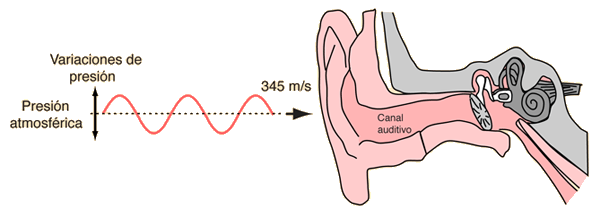
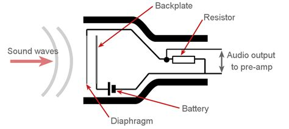
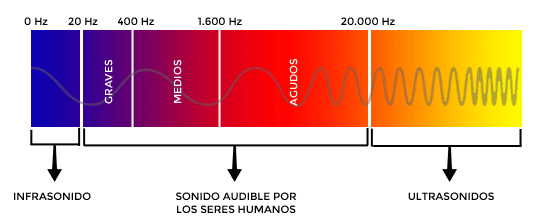
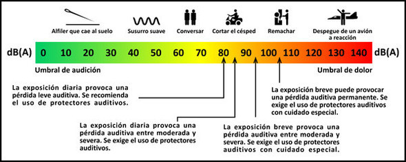

Ondas de audio
La audivión humana funciona a partir de las vibraciones percibidas a partir de las variaciones de la presión atmosférica en nuestro oído. Si bien cada persona es diferente, se considera que el oído humano es sensible a las frecuencias comprendidas entre los 19 Hz y los 19 kHz.
Un micrófono electrónico funciona de manera similar. Recibe las variaciones de presión y las transforma en impulsos eléctricos.

A la inversa, un parlante o un auricular transforma esos impulsos eléctricos en variaciones mecánicas que actúan sobre la presión ambiental generando ondas sonoras que el oído recibe como sonidos.
El audio digital es entonces una representación de estas ondas, almacenadas en bits. Y por lo tanto, susceptible de ser procesada y modificada a partir de operaciones discretas.
Los parámetros más importantes del audio son:
- la frecuencia, medida en herzios (Hz) que percibimos como el tono (más agudo o más grave)

- y la potencia, mediada en decibeles (dB) que percibimos como volumen (más fuerte o más suave)
